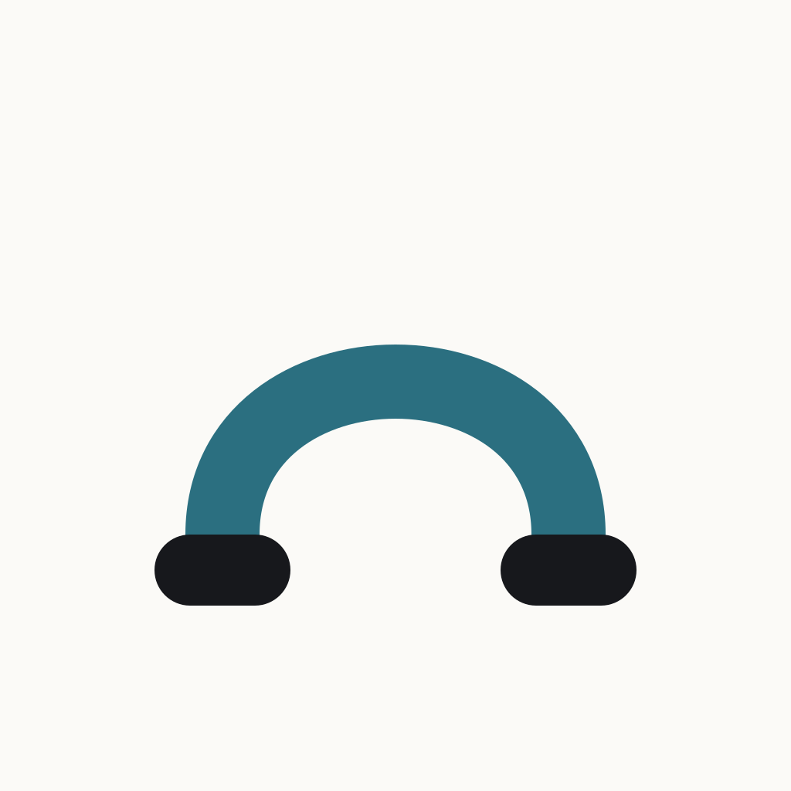
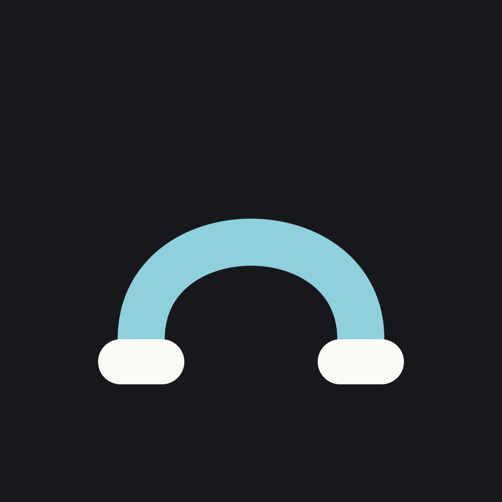
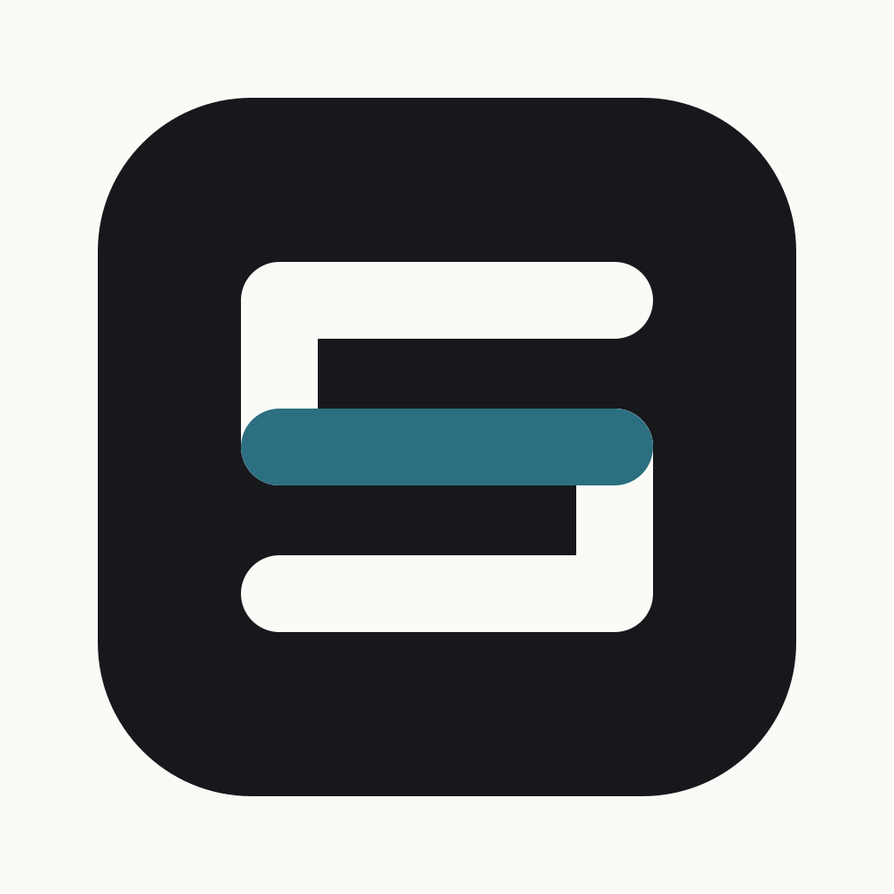
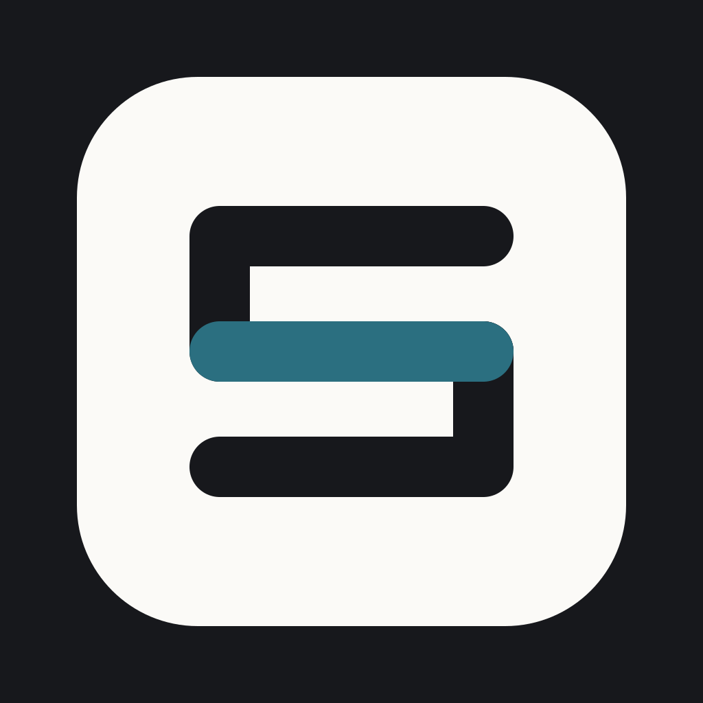

Icon studies · 26 November 2026
Sabir was the working tongue of Mediterranean ports — a bridge language. Each direction carries that idea at icon scale, in the existing ink and teal palette.
A filled caption bubble holds two lines: the spoken line in ink, its translation in teal underneath. The tail makes it speech, not a text file.
Recommended: the clearest read at 16 px, and the only one that shows both the source and the translated line.
Two ink shores joined by a single teal span. The most literal picture of a lingua franca: one line carrying meaning across a gap.
Strong metaphor, but the arch is the first detail to disappear below 24 px.


An S built from caption strokes inside a dark frame. The middle stroke is teal — the translated line cutting across the spoken one.
The most durable at tiny sizes and the easiest to put on an installer, but it says less about what the app does.


The chosen SVG becomes the single source for pnpm tauri icon: window, tray, installer, Store logos and favicon.svg.
16 px is the tray on a 100% display. A works by fill alone; B loses its arc; C keeps its shape but reads as a letter.
Ink and teal are already in the app. Nothing new enters the product for the icon.